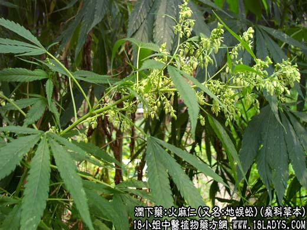

【中药概述】
火麻仁为桑科草本植物大麻的成熟果实。甘、平。归脾、胃、大肠经。
1．用于肠胃燥热，大便秘结，兼有养阴作用，临床上常用于体质较弱、老年及产妇、津血枯少的肠燥便秘，如（伤寒论<麻子仁丸>）。
2．用于血虚津亏，大便干燥困难，如<润肠丸>。
【药效鉴别】
火麻仁必需捣碎煎服，才能发挥药效。本品作用缓和，为润下良药。对气血两亏之心悸，脉结代证亦适用，如炙甘草汤中之火麻仁，系取其滋补之功。
【药理作用】
火麻仁煎剂有明显的降压作用，可使血压降低，且无不良反应。
【化学成分】
含脂肪油约30％、蛋白质、维生素B1、B2、卵磷脂、甾醇、胆碱、葡萄糖醛酸、蕈毒素等。
【用量用法】
10——30g，打碎入煎。或入丸、散剂。
【使用注意】
本品食入量大（100克～200克），可引起中毒。